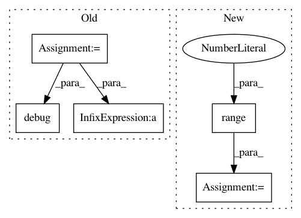

fb09c57ce108bd684a1bfe8a0a969635bf9d0bb9,reframe/frontend/executors/policies.py,SerialExecutionPolicy,runcase,#SerialExecutionPolicy#Any#,48
Before Change
getlogger().debug(
"polling rate (real): %.3f polls/sec" % real_rate)
desired_rate = pollrate(t_elapsed, real_rate)
getlogger().debug(
"polling rate (desired): %.3f" % desired_rate)
t = 1 / desired_rate
getlogger().debug("sleeping: %.3fs" % t)
time.sleep(t)
task.wait()
After Change
task.compile()
task.compile_wait()
task.run()
sleeptime = itertools.cycle(range(1, 11))
num_polls = 0
t_start = datetime.now()
while True:
num_polls += 1
sched.poll(task.check.job)
if task.poll():
break
t = next(sleeptime)
getlogger().debug("sleeping: %.3fs" % t)
time.sleep(t)
task.wait()
In pattern: SUPERPATTERN
Frequency: 3
Non-data size: 5
Instances
Project Name: eth-cscs/reframe
Commit Name: fb09c57ce108bd684a1bfe8a0a969635bf9d0bb9
Time: 2020-09-07
Author: eirini.koutsaniti@cscs.ch
File Name: reframe/frontend/executors/policies.py
Class Name: SerialExecutionPolicy
Method Name: runcase
Project Name: eth-cscs/reframe
Commit Name: fb09c57ce108bd684a1bfe8a0a969635bf9d0bb9
Time: 2020-09-07
Author: eirini.koutsaniti@cscs.ch
File Name: reframe/frontend/executors/policies.py
Class Name: AsynchronousExecutionPolicy
Method Name: exit
Project Name: IBM/adversarial-robustness-toolbox
Commit Name: f1444e8b67588af15862d17583ebec048acdb1a8
Time: 2019-06-03
Author: beat.buesser@ie.ibm.com
File Name: tests/attacks/test_zoo.py
Class Name: TestZooAttack
Method Name: test_krclassifier